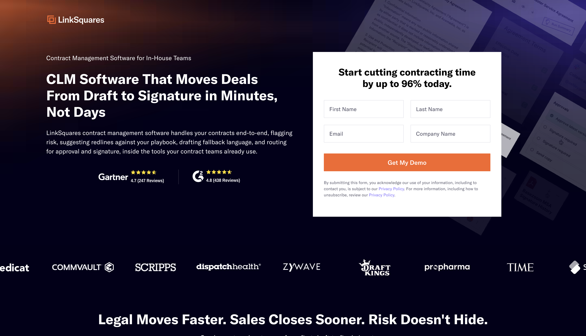
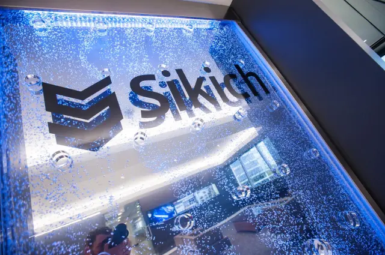

Questrom Consulting Lab
Two client engagements, from stakeholder interviews to shipped tooling

Overview
Questrom Consulting Lab pairs graduate teams with companies on real problems on a fixed timeline. I ran two engagements, both with technology clients, covering stakeholder discovery, scoping, delivery and the hand-off at the end.
LinkSquares — mapping the back office
LinkSquares is a Boston company building AI-powered contract lifecycle management software, founded in 2015 and used by more than 1,200 customers including DraftKings, Wayfair and TIME. It has raised roughly $164M, including a $100M Series C in 2022.
Fast growth leaves a company buying tools faster than it retires them. The engagement was to find out what the business actually runs on, and where the same job was being paid for twice.
- Mapped 150+ back-office systems across 9 departments through 8 stakeholder interviews
- Built a systems-relationship tool that surfaced $700K in projected annual savings from redundant tooling

Sikich — an enterprise AI knowledge assistant
Sikich is a Chicago-based professional services firm founded in 1982, offering accounting, advisory, technology and managed services, and ranked 27th on Accounting Today's Top 100 firms.
A firm that size holds most of its expertise in documents and in people's heads. The engagement was to make that knowledge answerable — a retrieval-augmented assistant staff could ask directly, rather than a search box over a file share.
- Led development of the enterprise AI knowledge assistant and its RAG solution
- Coordinated project execution, technical workstreams, deliverables and stakeholder alignment across the engagement
